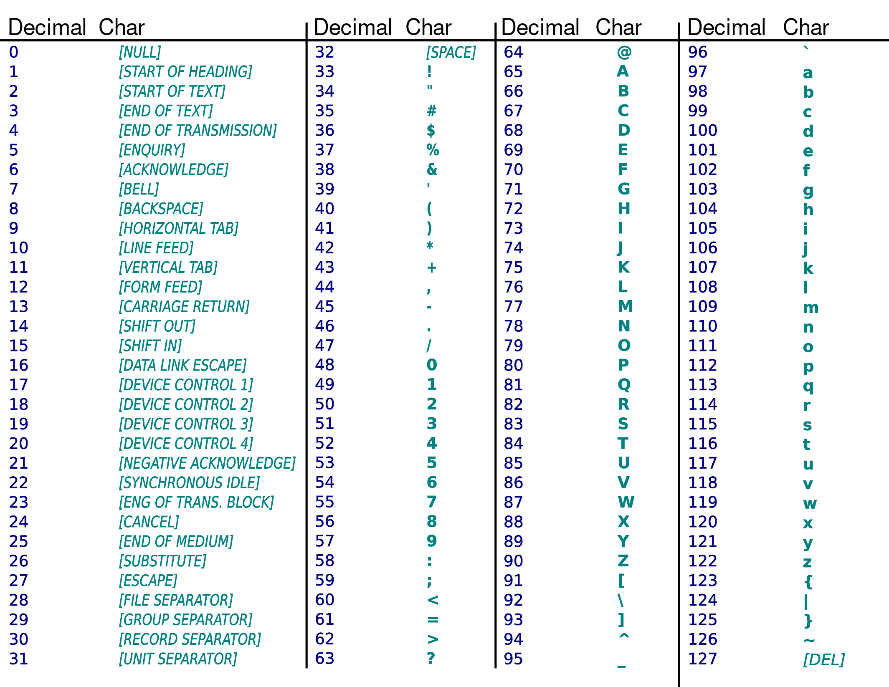

ASCII code and special characters
Recall ASCII table from a previous lecture:
Python has built-in functions to convert ASCII code (decimal) to/from a single character.
1print(ord("a")) # 97, the ASCII code for letter "a"2print(ord("A")) # 653print(ord("$")) # 3645print(ord("hi")) # doesn't work for more than one character6# TypeError: ord() expected a character, but string of length 2 found78print(chr(70)) # F, the character for ASCII code 70910print(chr(103)) # g
Example
Write a program that shifts each letter in a string to the left by 3 steps according to ASCII table.
i.e. A → >, B → ?, C → @, D → A, E → B, etc.
1word = "Python"23result = ""4for i in range(len(word)):5 code = ord(word[i]) # Get ASCII code for the letter6 code = code - 3 # Shift code by 37 # Get letter for the code and add it to result:8 result = result + chr(code)910print(result) # Mvqelk
Escape characters
There are special characters such as shown below, which we cannot direct enter in a string:
- newline character: This is the character representing “enter” or “return” key.
- tab character: This is the character representing “tab” key.
Such special character can be used in Python using escape characters.
1# Trying to enter a newline character directly fails:2message = "Hello3world"
message = "Hello
^
SyntaxError: EOL while scanning string literal
To include a newline character in a string we can use the escape character \n in the string:
1message = "hello\nworld"2print(message)
hello world
\n is stored as a single character even though it looks like two.
1print(ord("\n")) # 10
Another escape character is \t which represents the tab character.
It is useful as a separator when displaying values:
1# print uses space as separator by default2print("Khalid", 85)3print("Reza", 90)45# Using tab as separator6print("Khalid", 85, sep="\t")7print("Reza", 90, sep="\t")
Khalid 85 Reza 90 Khalid 85 Reza 90
Controlling print() function
In example above, we used a keyword argument sep= to tell print which separator to use between values.
Unlike the usual arguments, keyword arguments are given in the form name=value; in the example sep is the name of argument and "\t" is the value.
1# separator can be any string2print("Alice", 90, 3.14, sep=",")3# Alice,90,3.1445print("Alice", 90, 3.14, sep="|")6# Alice|90|3.1478# even longer than one character9print("Alice", 90, 3.14, sep="-----")10# Alice-----90-----3.141112print("Alice", 90, 3.14, sep="") # No separator!13# Alice903.14
By default, print() function displays a newline character \n at end of line.
1print("hello") # "\n" is displayed after "o"2print() # no arguments, just prints "\n"3print("world") # "\n" is displayed after "d"
hello world
We can change the end character using another keyword argument to print() function, end=.
1print("A sequence of numbers:")2print(1, end=",")3print(4, end=",")4print(9, end=",")
A sequence of numbers: 1,4,9,
This is useful in a loop:
1N = 102for i in range(N):3 print(i*i, end=", ") # comma and a space
0, 1, 4, 9, 16, 25, 36, 49, 64, 81,
Change the above example to not print the last comma. For example,
0, 1, 4, 9, 16, 25, 36, 49, 64, 81
Multiline strings
Using \n, we can create a single string that contains all of the following lines:
1shopping_list = "Shopping list\n- Milk\n- Eggs\n- Apples\n"2print(shopping_list)
Shopping list - Milk - Eggs - Apples
Python provides a better create multiline strings using triple quotes: ''' or """.
1shopping_list = '''Shopping list2- Milk3- Eggs4- Apples5'''67# OR the following, both are same89shopping_list = """Shopping list10- Milk11- Eggs12- Apples13"""1415print(shopping_list)

String methods
A method is similar to a function except that a method is always called on an object:
object.method_name(argument1, argument2, …)
str type has several methods that we can call on a string object:
1print("hello".upper()) # calling method upper() on the string "hello"2# HELLO34message = "hello"5print(message.upper()) # using variable that refers to string6# HELLO78message = 109print(message.upper()) # upper() only available for str objects10# AttributeError: 'int' object has no attribute 'upper'
Useful string methods
1s = "Luke, I am your father"23# s.lower() : returns a copy of s, but with all lower case letters.4print(s.lower())5# luke, i am your father67# s.upper() : returns a copy of s, but with all upper case letters.8print(s.upper())9# LUKE, I AM YOUR FATHER1011# s.replace(old, new) : returns a copy of s with all occurrences of12# the substring old replaced by new.13print(s.replace("am", "am not"))14# Luke, I am not your father1516print(s.replace(" ", "")) # empty string will delete17# Luke,Iamyourfather
1s = "banana"2# s.count(c) : returns the number of non-overlapping3# occurrences of substring c in s.4print(s.count("na"))5# 267# s.find(c) : returns the index where the substring begins in s begins.8# If c is not a substring of s, then -1 is returned.9print(s.find("an"))10# 11112print(s.find("naa"))13# -1
Example
In just one expression, compare if two strings s1 and s2 are equal in a case-insensitive manner.
1s1 = "Hello Everyone"2s2 = "hello everyone"34is_equal = s1.upper() == s2.upper()56# OR7# is_equal = s1.lower() == s2.lower()89print(is_equal) # prints True
in operator (membership operator)
- In Python in is a keyword.
- The in and not in operators test for membership.
- We can use them with strings to test if one string is a substring of another.
1s = "More garbage"2print("age" in s) # True3print("x" in s) # False4print("w" not in s) # True
while statement
while statement is another way to repeatedly execute a block of code.
General format of a while loop:
Initialize variables so that condition is True
while condition :
code block
update variables that affect condition
What while loop does:
- Evaluate the
condition - If
conditionevaluates to False, loop body is not executed. - If
conditionevaluates to True, run the loop body (all indented lines of code)
a) In loop body we perform some task,code block, and update variables that may change theconditionvalue
b) Go back to step 1
1# a program to compute sum of first N numbers2N = 1034total = 056i = 1 # Set value so that condition below is True7while i <= N: # Check if condition is True8 # main task of summing numbers:9 total = total + i1011 # update i, affects value of condition i <= N12 i = i + 11314# print result outside the loop15print(total)
It is a common mistake to forget updating the condition inside loop body.
See what happens when you remove/comment out the line i = i + 1 in above example.
The loop will never end — an infinite loop!
Augmented assignment statements
Augmented assignment is the combination, in a single statement, of a arithmetic operation and an assignment statement:
1x = 32y = 534x += 1 # same as: x = x + 156x += y # same as: x = x + y78x += x * y # same as x = x + x * y910x -= 5 # x = x - 51112x *= 2 # x = x * 2
Similarly, other operators exist: /=, //=, %=, **=.
These are very useful, especially when updating the condition in while loop.
Indefinite loops
So far we have seen loops that work with fixed number of steps.
But while loop can be used for repeating code for unknown number of steps:
1# program to keep asking for password until correct password is entered.2# Assume that correct password is "1234"34password = input("Enter password: ")56while password != "1234":7 print("Incorrect password, try again!")89 password = input("Enter password: ")1011# If we reach this line it means "1234" was entered as password:12print("Login successful!")
Change above example to ask for an email and password.
Program should continue until both email and password are correct.
Password comparison must be case-sensitive, while email comparison should be case-insensitive.
For comparison, just choose any email, password that you like.
for vs while loops
- for loops are better when we want to go over a fixed sequence such as a a string or a series of numbers
- while loop is more flexible an allows arbitrary conditions and number of steps. e.g. do something until user enters correct data
break and continue statements
break statement can be used to terminate a loop before it normally ends.
After a break statement is executed, no other code inside the loop is executed.
1for i in range(10):2 if i > 5:3 break4 print(i)56print("Bye!")
0 1 2 3 4 5 Bye!
Example:
DNA sequences can be represented in Python using strings made of A, C, G, or T.
A homopolymer is a sequence made entirely of the same letter, such as AAAAA, GG, TTTTTTTT.
Write a program that checks if a sequence is homopolymer, and prints the result.
1seq = "AAAAAAA" # homopolymer2# seq = "AAAAGA" # not a homopolymer34is_homopolymer = True5for i in range(len(seq)):6 if seq[i] != seq[0]:7 # Found different letter8 is_homopolymer = False9 break # don't loop further1011if is_homopolymer:12 print("homopolymer")13else:14 print("not homopolymer")
Example:
Write a program that takes an integer as input and prints whether the number is prime or not. To check if a number n is prime:
- Divide n by each number i from 2 to n-1
- if n is divisible by any i then n cannot be not prime
- In other words, if n is not divisible by all i’s then n is prime
1num = int(input("Enter number: "))23is_prime = True45if num < 2:6 is_prime = False7else:8 for i in range(2, num):9 if num % i == 0:10 is_prime = False11 break1213print(is_prime)
Using break in a while loop.
Consider the following example to check if email/password are correct:
1email = input("Enter email: ")2password = input("Enter password: ")34while email.lower() != "abcd@gmail.com" or password != "1234":5 print("Incorrect email or password, try again!")67 email = input("Enter email: ")8 password = input("Enter password: ")910print("Login successful!")
We can simplify the code using a break statement:
1while True:2 email = input("Enter email: ")3 password = input("Enter password: ")4 if email.lower() == "abcd@gmail.com" and password == "1234":5 break6 print("Incorrect email or password, try again!")78print("Login successful!")
continue statement
continue statement is useful to skip some steps in a for/while loop.
After a continue statement is executed, code that follows the statement is skipped and execution continues from the next step of the loop.
1for i in range(1, 50):2 if i % 2 == 0 or i % 3 == 0:3 continue4 print(i, end=" ")
1 5 7 11 13 17 19 23 25 29 31 35 37 41 43 47 49
Functions and return statement
Functions that do not have an explicit return statement, return a special value None.
1print(None, type(None))2# None <class 'NoneType'>
The following 3 functions are equivalent because
- Python implicitly returns None for a function that does not use a return statement
- if the return statement is used without a value, None is returned.
1def display_greeting():2 print("+------------+")3 print("| Welcome! |")4 print("+------------+")
1def display_greeting():2 print("+------------+")3 print("| Welcome! |")4 print("+------------+")5 return
1def display_greeting():2 print("+------------+")3 print("| Welcome! |")4 print("+------------+")5 return None
Controlling the flow of execution with return statement
As we have seen, return statement allows us to return a value from a function back to the code that calls the function.
But at the same time return statement also ends execution of the function.
When return statement is executed, no further code in the function gets executed.
1def display(message):2 print("***** " + message + " *****")3 return4 print("This will never be displayed")567display("hello")
***** hello *****
This is very useful when using loops.
For example, using return statements in a function, we can further simplify the prime number example:
1def is_prime(num):2 if num < 2:3 return False45 for i in range(2, num):6 if num % i == 0:7 return False89 return True101112print(is_prime(7))13print(is_prime(9))
True False
Important: we must make sure that all branches/cases in the function return a value.
In above example, if we forget the last return statement in the function, return None will happen implicitly, which would be incorrect.
We can rewrite the solution for homopolymer problem using a function is_homopolymer that takes a string as an argument and returns True if the string is homopolymer, False otherwise.
1def is_homopolymer(seq):2 for i in range(len(seq)):3 if seq[i] != seq[0]:4 return False56 return True78print(is_homopolymer("GGGGGG"))9print(is_homopolymer("GGGGAG"))
Nested Loops
We can have a for/while loop inside other for/while loops.
This is useful when we have two sequences and we need all combinations/pairs of items from the sequences.
Example 1
Write a program that prints all pairs of numbers that sum to when two six-sided dice are rolled.
1# outer loop for first die d1:2for d1 in range(1, 7):3 # inner loop for second die d24 for d2 in range(1, 7):5 if d1 + d2 == 7:6 print(d1, d2)
1 6 2 5 3 4 4 3 5 2 6 1
Example 2
Write a program that takes two string—one with consonants and other with vowels—and combines each consonant with every vowel to print a syllable.
1consonants = "bdfghjklmn"2vowels = "aeiou"34for i in range(len(consonants)):5 for j in range(len(vowels)):6 syllable = consonants[i] + vowels[j]7 print(syllable, end=" ")8 print() # to start printing from next line
ba be bi bo bu da de di do du fa fe fi fo fu ga ge gi go gu ha he hi ho hu ja je ji jo ju ka ke ki ko ku la le li lo lu ma me mi mo mu na ne ni no nu
random module
In Python, we can generate (pseudo)-random numbers using the random module.
The module provides us with a lot of different functions but for the moment we’ll focus on the following:
- random() – It returns a random float value between (inclusive) and (exclusive)
- randint(x, y) – It returns a random int value between x and y, both included.
Each time your execute these functions, you will get a different value, try it!
1import random2print(random.random()) # 0.1282624622593964134print(random.random()) # 0.3379714919593481756print(random.randint(1, 10)) # 97print(random.randint(1, 10)) # 1
The seed
- The random number generation is not truly random.
- It is determined by an initial value that is called the seed.
- By default, the seed used to generate the numbers is the current system time.
- This means that each time we run the program, the seed will be different, and the numbers generated will also be different.
- We can fix the seed using the function random.seed()
Run the following with the seed function call and without it (comment the line):
1import random2random.seed(123) # Try with and without this line3i = 04while i < 5:5 print(random.randint(1, 100))6 i += 1
turtle module
- turtle is a Python module that allows us to draw shapes using simple commands — go left/right, lift pen up, put pen down etc.
- turtle module provides a Turtle class. We can create an object of Turtle class and call its methods to draw shapes.
1from turtle import Turtle23t = Turtle()45t.forward(100) # go forward 100 units6t.right(90) # turn right by 90 degrees7t.forward(100)
1# Drawing a square23from turtle import Turtle45t = Turtle()67for i in range(4):8 t.forward(100) # go forward 100 units9 t.right(90) # turn right by 90 degrees
1# Random drawing23from turtle import Turtle4from random import randint56t = Turtle()78for i in range(100):9 # turn left if random number is even10 if randint(1, 2) == 1:11 t.left(90)12 else:13 t.right(90)1415 t.forward(30)
1# Drawing using coordinates23from turtle import Turtle45t = Turtle()67t.goto(150, 150)8t.goto(150, 0)9t.goto(0, 0)10t.goto(-150, 0)11t.goto(150, 150)
1# Drawing a sine curve23from turtle import Turtle4from math import sin, pi56t = Turtle()78x = 09scale = 5010dx = 1 # Make this smaller for smoother curve11while x < 2 * pi:12 t.goto(scale * x, scale * sin(x))13 x = x + dx